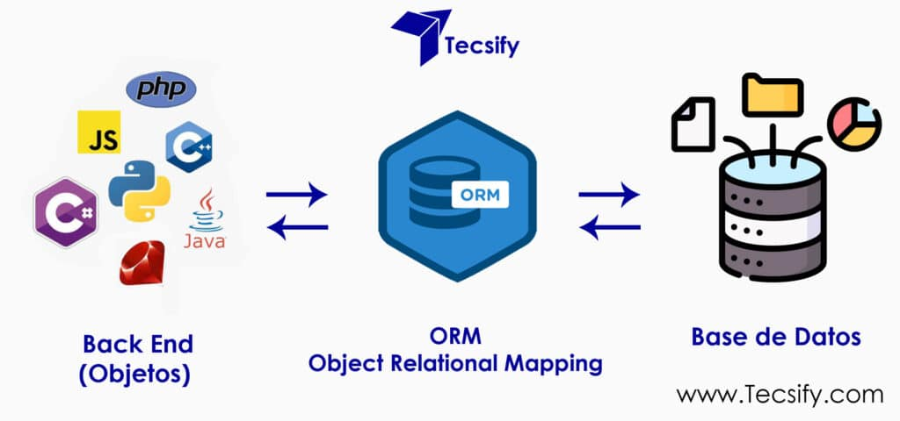
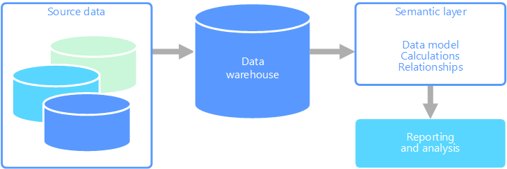
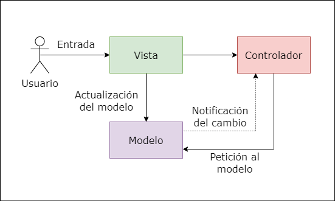
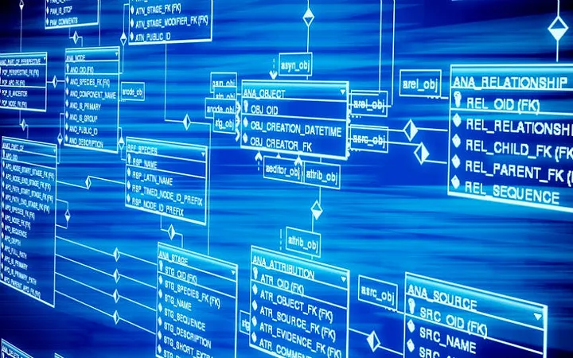

| Palabra con O | Definicion en Español | Definicion en Ingles | Eje. Imagen |
|---|---|---|---|
| 1. ORM (Mapeo Objeto-Relacional) - ORM (Object-Relational Mapping) | Técnica de programación para convertir datos entre el sistema de tipos de un lenguaje orientado a objetos y una base de datos relacional. | A programming technique for converting data between the type system of an object-oriented language and a relational database. |  |
| 2. Olap (Procesamiento Analítico en Línea) - OLAP (Online Analytical Processing) | Tipo de arquitectura de base de datos optimizada para realizar consultas complejas, análisis de datos masivos y generación de informes de inteligencia de negocio. | A type of database architecture optimized for complex queries, massive data analysis, and business intelligence reporting. |  |
| 3. Orquestación - Orchestration | La coordinación y gestión centralizada de múltiples servicios o componentes automatizados en un sistema para que ejecuten una tarea compleja. | The centralized coordination and management of multiple automated services or components in a system to execute a complex task.. |  |
| 4. Overengineering (Sobreingeniería) - Overengineering | El error de diseño que consiste en hacer una arquitectura de software más compleja, robusta o flexible de lo que realmente se necesita para resolver el problema actual. | The design mistake of making a software architecture more complex, robust, or flexible than what is actually needed to solve the current problem. | |
| 5. Optimización de consultas - Query Optimization | Proceso por el cual el motor de una base de datos analiza y elige la estrategia más eficiente (plan de ejecución) para recuperar o modificar datos. | The process by which a database engine analyzes and chooses the most efficient strategy (execution plan) to retrieve or modify data. |  |